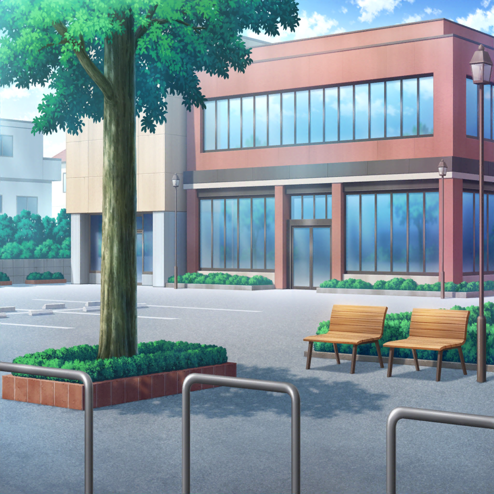

隣町
香澄
さーや、あとどれくらいかな？
沙綾
もうかなり近くまで来てるから、あとちょっとだと思うよ
はぐみ
あ！ ねぇ、あそこ見て！
おっきい木が見えてきたよ！
香澄
ホントだ！
沙綾
小さな池があるのも、大体あの辺だね
有咲
あそこまでずっと坂道が続いてるし……
どうやらここで間違いないみてーだな
香澄
わ～、ホントにあの公園にまた来れたんだね！？
すっごいドキドキしてきちゃった！
はぐみ
はぐみも～っ！
香澄
私、ちょっと走って行ってくるね！
はぐみ
あ、かーくん待ってよ～！
はぐみも一緒に行くーっ！

思い出の公園……？
香澄
ここが……
はぐみ
思い出の……公園……？
香澄・はぐみ
…………
有咲
はぁ、はぁ……
どうだ？ 公園はあったか？
香澄
ううん……公園が……ないの……
有咲
は？
それって、もしかしてここでもねーってことか？
はぐみ
ううん、場所はあってると思う！
ここに木があって、隣に小さな池があって、
前の道が坂道になってて……ここで間違いないよ！
香澄
けど、こんな建物はなかったよ。
昔は、ここが全部公園だったんだよ！
沙綾
この辺の地区の公民館みたいだね。
地図アプリにも、そうやって書いてあるから……
有咲
てことはつまり……
公園をつぶして、公民館を作った、ってことになるのか
香澄
……あ！
そういえば思い出した！
はぐみ
うん、はぐみも！

はぐみ
こーえん……
こーじちゅうなのかな？
かすみ
……うん。
入れなくなっちゃった……
かすみ
……う、うぅ……っ。
やだ、やだやだやだー。
こーえん、なくなっちゃうのかな？
はぐみ
はぐみもやだよー……
かすみちゃんといっしょに、こーえんであそびたいよー……
ふぇ～～～ん……
香澄
そっか……
だから私達、一緒に遊べなくなっちゃったんだね……
はぐみ
……うん。
公園がなくならなかったら、
かーくんとずっと遊べたのになー……
有咲
まあ……
時代の流れだし、こればっかりはしょうがねーな……
沙綾
けど、良かったよ！
二人が遊ばなくなっちゃった理由がケンカじゃなかったって、
これではっきりしたし！ それがわかっただけでも、ね？
香澄
確かね……
公園を入って右側のあの辺りに、ブランコがあったんだよ。
私とはぐが一番最初に会ったブランコ
はぐみ
で、その奥におっきいすべり台があったよね！
かーくん、そのすべり台で頭から滑ったりしてたよね～
香澄
でね、こっち側に砂場があったの！
はぐみ
水飲み場は確かあの辺だったかな？
香澄
私が転んでケガをしちゃった時、
はぐが水飲み場の水道で私のひざを洗ってくれたよね？
はぐみ
あ！ あれ、本当に痛そうだったよね～
香澄
なんか……すっごい懐かしいな～……
香澄
はぐ！
子供のころの私と一緒に遊んでくれて……仲良くなってくれて
ありがとうね！
はぐみ
ううん！ お礼を言いたいのは、はぐみの方だよ～！
かーくんと一緒に遊べたの、すっごい楽しかったよ！
有咲
あ、あのさ……さっきは悪かったな。
二人がケンカしたんじゃないか、とか言っちゃって……
そんなに仲良かったなんて、私知らなかったから……
香澄
ううん！ 今日、有咲とさーやがいてくれたおかげで、
いろんな大事な思い出を取り戻せたんだもん！
二人にも、すっごい感謝してるよ！
はぐみ
あーちゃん、さーや！
ありがとね！
沙綾
ふふふ、どういたしまして。
あ、せっかくだからさ、公民館に寄っていかない？
私、ちょっと喉が渇いちゃった
有咲
私も喉渇いた。
それにせっかく二人の思い出の場所に来たんだから、
もうちょっとゆっくりしていこうぜ
香澄・はぐみ
うん！